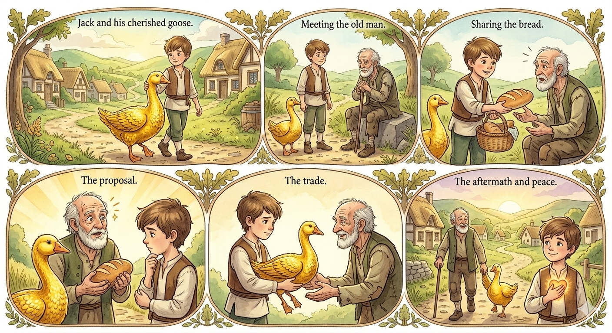

The Golden Goose

Once upon a time, in a beautiful village surrounded by green meadows and tall trees, there lived a young boy named Jack. Jack was known throughout the village for his kind heart and gentle nature, but he was also known for his special pet – a golden goose.
Now, this was no ordinary goose. Its feathers shined like gold, and wherever it went, it brought good fortune and joy to those around it. Jack cherished his golden goose dearly and took great care of it, feeding it and keeping it safe from harm.
One day, as Jack was taking his golden goose for a walk through the village, he met an old man sitting by the roadside. Jack saw that the man looked tired and sad. His clothes were worn out, and he looked hungry.
Feeling kind, Jack approached the old man with a warm smile and offered him a piece of bread from his basket. The old man’s eyes widened in surprise as he thankfully accepted the bread, his hands shaking with hunger.
Then, as the old man looked at the golden goose beside Jack, his expression changed from gratitude to wonder. He could hardly believe his eyes as he saw the amazing creature, its feathers shining like gold in the sunlight.
“My dear boy,” the old man began, his voice shaking with emotion, “would you be willing to trade your golden goose for this simple loaf of bread?” His eyes sparkled with hope as he waited for Jack’s response.
Jack hesitated for a moment, his heart torn between his attachment to the golden goose and his desire to help the old man. He knew that the goose was a precious gift, bringing joy and good fortune wherever it went. But he also knew that the old man was in need, and he couldn’t bear to see him suffer.
Finally, after a moment’s thought, Jack nodded and agreed to the trade. With a gentle smile, he handed the golden goose over to the grateful stranger, his heart heavy with both sadness and hope.
To Jack’s surprise, as soon as the old man touched the golden goose, he burst into laughter, his eyes sparkling with delight. With a happy laugh, he set off down the road, the golden goose walking along beside him.
As Jack watched the old man disappear into the distance, a sense of peace washed over him. Though he missed his golden goose dearly, he knew that he had done the right thing. And as he made his way back home, he couldn’t help but feel a warm glow spreading through his heart, knowing that he had made a difference in the old man’s life.
And so, under the shining stars of the night sky, Jack drifted off to sleep, his heart full of the magic of kindness and the joy of giving. For in the end, he knew that the truest treasures in life were not made of gold but of love, compassion, and the simple act of sharing.